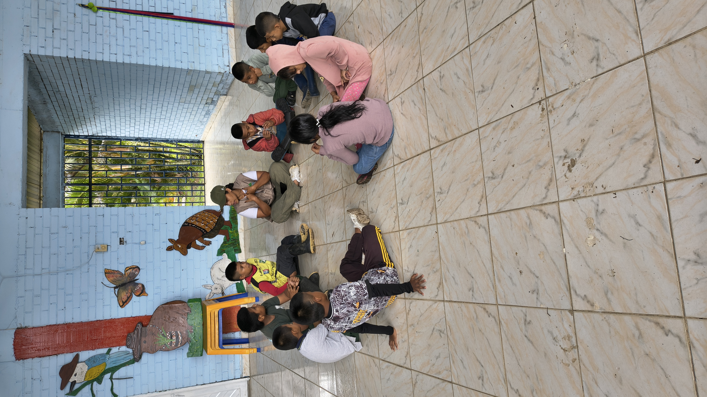
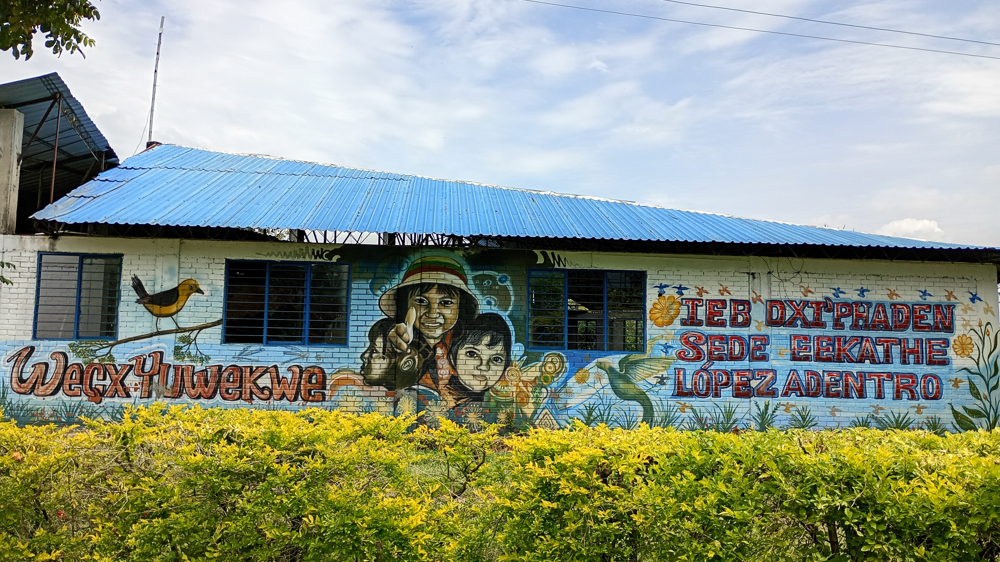
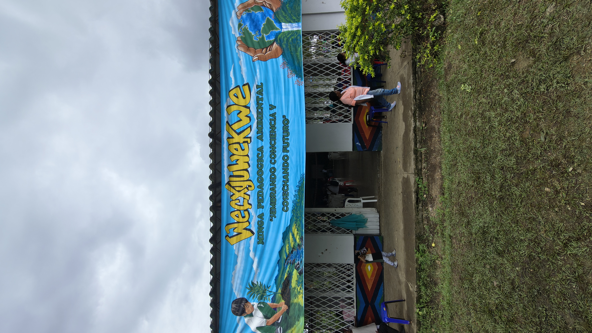

🌱 Kwesx Fiwe
(Nuestras Semillas)
Vivero Escolar de Eekathé
Resguardo de López Adentro
Caloto, Cauca
Vivero Escolar de Eekathé
Resguardo de López Adentro
Caloto, Cauca
8 años
5.000 árboles
10.000 árboles
9 estudiantes
12 especies
Kwesx Fiwe significa "Nuestras Semillas". El vivero concibe a los niños y niñas como semillas que crecerán para cuidar la Madre Tierra y fortalecer el territorio.
El vivero nació hace ocho años por iniciativa de la docente Adriana Tombé como respuesta a la escasez de agua y la necesidad de fortalecer la arborización de la institución y del resguardo.
Lo que comenzó con 300 árboles sembrados se ha convertido en un proceso pedagógico, cultural y ambiental que alcanzó una producción cercana a 5.000 árboles en 2024.
Cada semana se desarrolla el "Día de Tul", una jornada donde los estudiantes realizan actividades de siembra, riego, monitoreo y mantenimiento del vivero.
El proceso integra conocimientos ambientales, culturales y territoriales mediante experiencias prácticas.
| Especie | Presencia |
|---|---|
| Nacedero | ✓ |
| Flor amarillo | ✓ |
| Chicalá | ✓ |
| Matarratón | ✓ |
| Platanillo | ✓ |
| Iraca | ✓ |
| Lechero rojo | ✓ |
| Gualanday | ✓ |
| Acacia | ✓ |
| Guayacán amarillo | ✓ |
| Cedro rosado | ✓ |
| Achiote | ✓ |



